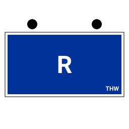

Fachgruppe Räumen: Erfassungsbogen für FGr R (A), (B) und (C)

Die Fachgruppe Räumen ist die Einheit mit der Baumaschine. Sobald sie ausrückt, steht auf dem Erfassungsbogen mehr als eine Stärkezahl: Es zählt, welches Bergungsräumgerät mitkommt — und genau daran hängen Typ, Funkrufname und Fahrzeugliste. Diese Seite zeigt, was auf dem Bogen der FGr R steht, was die App davon von selbst einträgt und wo du aufpassen musst. Die App ist kostenlos, läuft offline im Browser und braucht keine Anmeldung; der allgemeine Teil steht auf der Seite THW-Erfassungsbogen.
Was die Fachgruppe Räumen im Einsatz macht
Sie beseitigt oder ebnet Hindernisse und Trümmer ein und schafft damit Zu- und Abfahrtswege — für die eigene Einheit und für andere Fachdienste. Beim Vordringen zu Eingeschlossenen und Verschütteten hebt, zerkleinert und beseitigt sie große Trümmerteile und übernimmt Aushubarbeiten. Dazu kommen unaufschiebbare Sicherungsarbeiten an einsturzgefährdeten Gebäude- und Bauwerksteilen sowie Stemm- und Bohrarbeiten, auch als Zuarbeit für andere Fachgruppen. Die Fachgruppe gehört zum Technischen Zug. (Aufgabenbeschreibung sinngemäß nach THWiki, abgerufen im August 2026 — THWiki ist ein privat betriebenes Wiki und keine amtliche Seite des THW.)
Drei Typen, drei Baumaschinen — und drei Kennzahlen
Seit der Neukonzeptionierung 2016 unterscheidet sich die FGr R nach ihrem Bergungsräumgerät. Das ist der einzige Unterschied, der sich im Erfassungsbogen niederschlägt: Stärke und übrige Fahrzeuge sind bei allen drei Typen gleich.
| Einheitstyp | StAN-Nr. | Bergungsräumgerät | Kennzahl Teileinheit |
|---|---|---|---|
| FGr R (A) | 02-04a | Bagger | 42 |
| FGr R (B) | 02-04b | Radlader | 41 |
| FGr R (C) | 02-04c | Teleskoplader | 43 |
Die Typenlogik ist nicht immer so gewesen: Vor 2016 stand Typ A für Radlader oder Bagger und Typ B für die kleineren Geräte, einen Typ C gab es nicht. Wer eine ältere Übersicht oder eine alte Vorlage vor sich hat, sollte deshalb prüfen, nach welcher Systematik sie gebaut ist. THWiki merkt außerdem an, dass in einzelnen Ortsverbänden abweichende Geräte als Übergangslösung vorhanden sind — für den Bogen heißt das schlicht: das tatsächlich vorhandene Fahrzeug eintragen.
Stärke der FGr R im Bogen: -/2/7/9
Die Sollstärke beträgt für alle drei Typen neun Einsatzkräfte, notiert in der gewohnten Reihenfolge Führer / Unterführer / Mannschaft / Gesamt als -/2/7/9: kein Zugführer, zwei Unterführer (Gruppenführung und Truppführung), sieben Fachhelferinnen und Fachhelfer. Diese Zahl liegt der Vorbelegung der App zugrunde, gezogen aus den StAN-Einzeldokumenten mit Stand 01.07.2026.
Wählst du den Einheitstyp, legt die App neun Personalkarten an: Für die Gruppenführung und die Truppführung steht die Funktion schon drin („GrFü R“, „TrFü R“), die sieben Fachhelferplätze bleiben bewusst leer — welche Qualifikation heute auf welchem Platz sitzt, entscheidet der Ortsverband, nicht die Vorlage.
Fahrzeuge und Funkrufnamen, die die App schon einträgt
Vier Einsatzmittel gehören nach StAN zur Fachgruppe Räumen. Drei davon sind bei allen Typen gleich, nur die Baumaschine wechselt. Fahrzeuge, die Funkstelle sind, bekommen von der App gleich den Funkrufnamen nach Taschenkarte — Kennwort „Heros“, eigener Standort, dann Kennzahl der Teileinheit und des Fahrzeugs. Anhänger sind keine Funkstellen und bleiben folgerichtig ohne.
| Einsatzmittel | FGr R (A) | FGr R (B) | FGr R (C) |
|---|---|---|---|
| Lastkraftwagen Kipper | 42/42 | 41/42 | 43/42 |
| Baumaschine (Bagger / Radlader / Teleskoplader) | 42/71 | 41/72 | 43/73 |
| Anhänger Tieflader | kein Funkrufname | ||
| Anhänger Drucklufterzeuger | kein Funkrufname | ||
Gelesen wird das als „Heros <Ortsverband> 42/71“ — der Bagger der Fachgruppe Räumen Typ A. Der Anhänger Tieflader bringt die Baumaschine zur Einsatzstelle, der Drucklufterzeuger versorgt das pneumatische Gerät; beide zählen im Bogen als Einsatzmittel mit, ohne eigenen Rufnamen.
So kommst du zum fertigen Bogen
- In der App unter Schritt 1 „Einheit“ die Organisation THW wählen und im Feld Einheitstyp „Fachgruppe Räumen (A)“, „(B)“ oder „(C)“ auswählen. Damit stehen taktisches Zeichen, die neun Personalplätze und die vier Einsatzmittel samt Funkrufnamen im Bogen.
- Ortsverband tippen — Name, Kürzel, Telefon und E-Mail kommen aus dem hinterlegten Verzeichnis, Regionalstelle und Landesverband meist dazu.
- Mustern statt neu anlegen: streichen, wer heute nicht ausrückt, und eintragen, welches Gerät tatsächlich mitfährt. Kennzeichen ergänzt du selbst — die Vorbelegung lässt das Feld offen.
- Einsatzauftrag benennen, PDF drucken oder den QR-Code auf der letzten Seite am Meldekopf scannen lassen.
Fertig ausgefüllte Bögen der FGr R liegen der App bei — unter „Beispielbögen“ finden sich Typ-A-Bögen etwa aus Halberstadt, Schleswig und Bochum, Typ B aus Bremen-Süd, Schöningen und Bitburg, Typ C aus Eckernförde und Westerburg. Sie taugen als Muster zum Ansehen und als Ausgangspunkt für die eigene Einheit. Die typischen Einsatzstichworte darin — „Unwetterschäden — Räumen Verkehrswege“, „Erdrutsch — Räumen, Freilegen“, „Sturmschäden — Räumen, Materialumschlag“ — zeigen zugleich, wofür die Fachgruppe angefordert wird.
Wo Namen und Erreichbarkeiten bleiben
Die Personendaten deiner Einsatzkräfte stehen im lokalen Speicher deines Geräts: kein Server, kein Konto, keine Cloud. Ein Bogen verlässt das Gerät nur, wenn du ihn selbst weitergibst — als PDF, als Datei, als QR-Code oder als Link. Welche Einträge gespeichert werden und welche Verbindungen die Anwendung von sich aus aufbaut, ist unter Open Source und Datenschutz vollständig aufgeführt.
Häufige Fragen zur FGr R im Erfassungsbogen
Mein Ortsverband hat ein anderes Bergungsräumgerät als in der StAN. Was trage ich ein?
Das tatsächlich vorhandene Gerät. Die StAN-Vorbelegung ist ein Startpunkt: Du kannst jedes Fahrzeug streichen, ersetzen oder ergänzen. Der Einheitstyp — und damit die Kennzahl im Funkrufnamen — bleibt davon unberührt und richtet sich weiter nach der Aufstellung des Ortsverbands.
Warum steht bei den Fachhelferplätzen keine Funktion?
Weil sie nicht allgemeingültig festliegt. Die App belegt nur die Führungs- und Unterführungsfunktionen vor und lässt die Fachhelferplätze als leere Karten stehen. Wer Qualifikationen im Bogen führen will, trägt sie je Person ein; für die reine Stärkemeldung an den Meldekopf reichen die Stärkezahlen.
Gibt es auch Bögen für andere Fachgruppen?
Ja — im Vokabular stehen alle THW-Einheitstypen vom Zugtrupp bis zu den Fachgruppen der Fachzüge. Eigene Seiten gibt es bisher für die Fachgruppe Notversorgung/Notinstandsetzung und die Fachgruppe Wasserschaden/Pumpen.
Stand der Angaben
Stärke, StAN-Nummern, Fahrzeugvorbelegung und Funkruf-Kennzahlen dieser Seite stammen aus den Vokabularen der App; ihre Grundlage sind die StAN-Einzeldokumente mit Stand 01.07.2026. Die Aufgabenbeschreibung und die Angabe, dass bundesweit rund 186 Fachgruppen Räumen aufgestellt sind, stammen aus dem privat betriebenen THWiki (Stand der dortigen Seite: Oktober 2024, keine amtliche THW-Quelle) — die Zahl kann sich seither verschoben haben. Verbindlich ist immer die aktuelle StAN deiner Einheit.
Kostenlos, ohne Anmeldung, alle Daten bleiben auf deinem Gerät.